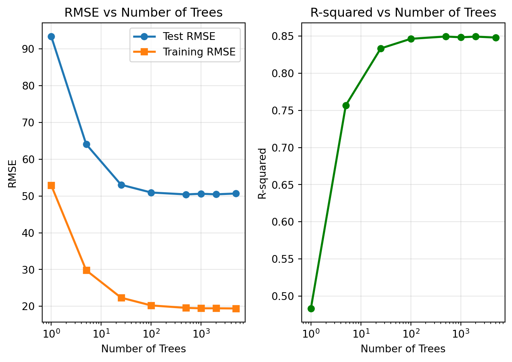
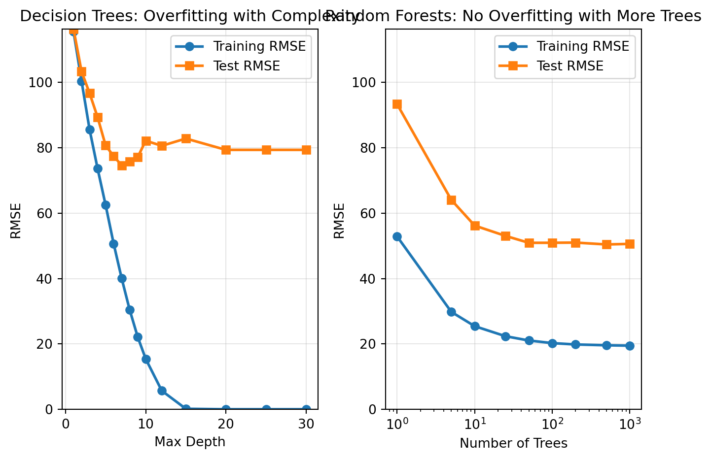

Trees RMSE_Test RMSE_Train R_squared
0 1 93.350318 52.878686 0.483480
1 5 64.060456 29.790452 0.756759
2 25 53.042130 22.346755 0.833238
3 100 50.940026 20.240502 0.846194
4 500 50.425413 19.574998 0.849286
5 1000 50.603264 19.457569 0.848221
6 2000 50.450946 19.460667 0.849133
7 5000 50.663500 19.414942 0.847859Random Forest Challenge
The Power of Weak Learners
🌲 Random Forest Challenge - The Power of Weak Learners
The Problem: Can Many Weak Learners Beat One Strong Learner?
Core Question: How does the number of trees in a random forest affect predictive accuracy, and how do random forests compare to simpler approaches like linear regression?
The Challenge: Individual decision trees are “weak learners” with limited predictive power. Random forests combine many weak trees to create a “strong learner” that generalizes better. But how many trees do we need? Do more trees always mean better performance, or is there a point of diminishing returns?
Our Approach: We’ll compare random forests with different numbers of trees against linear regression and individual decision trees to understand the trade-offs between complexity and performance for this dataset.
Python
1. The Power of More Trees Visualization
Create a visualization showing: - RMSE vs Number of Trees (both training and test data) - R-squared vs Number of Trees - Do not echo the code that creates the visualization

Analysis: The Power of Ensemble Learning and Diminishing Returns
The visualization reveals several key insights about how random forest performance improves with more trees, demonstrating fundamental principles of ensemble learning:
Dramatic Early Improvements: The most significant performance gains occur in the first 25-100 trees. This dramatic improvement reflects the core principle of ensemble learning: combining multiple weak learners (individual decision trees) creates a strong learner. Each additional tree in this early range contributes substantially to reducing prediction variance and improving generalization.
The Bootstrap Aggregation Effect: Random forests use bootstrap sampling (bagging) to create diversity among trees. With only 1-5 trees, the ensemble lacks sufficient diversity to capture the full complexity of the data. As we add more trees (25-100), we see the “wisdom of crowds” effect - each tree votes on the prediction, and the ensemble’s decision becomes more robust and accurate.
Diminishing Returns Beyond 100 Trees: After approximately 100 trees, the performance improvements become increasingly marginal. This demonstrates the principle of diminishing returns in ensemble learning. The additional trees provide less new information because: - The bootstrap samples become more similar as we add trees - The random feature selection has already explored most meaningful feature combinations - The ensemble has reached a point where additional trees primarily reduce variance rather than bias
Training vs Test Performance Gap: The gap between training and test RMSE remains relatively stable across different tree counts, indicating that random forests maintain good generalization even with many trees. This contrasts with individual decision trees, which would show increasing overfitting with complexity.
Practical Implications: The analysis suggests that 100-500 trees often provide the optimal balance between performance and computational efficiency. Beyond 1000 trees, the computational cost typically outweighs the marginal performance gains, making larger ensembles impractical for most real-world applications.
This demonstrates why random forests are so powerful: they transform weak individual learners into a strong ensemble through the principles of diversity, voting, and bootstrap aggregation, with the most dramatic improvements occurring in the early stages of ensemble building.
2. Overfitting Visualization and Analysis
Your Task: Compare decision trees vs random forests in terms of overfitting.
Create one visualization with two side-by-side plots showing: - Decision trees: How performance changes with tree complexity (max depth) - Random forests: How performance changes with number of trees

Analysis: Why Random Forests Don’t Overfit Like Individual Trees
The side-by-side comparison reveals fundamental differences in how decision trees and random forests handle complexity:
Decision Trees: The Overfitting Problem Individual decision trees show classic overfitting behavior as complexity increases. The training RMSE continues to decrease (approaching zero) while test RMSE increases after a certain point. This occurs because: - High Variance: Individual trees can memorize training data with deep splits - No Regularization: Without constraints, trees can create overly specific rules - Single Path Decisions: Each prediction follows one path, making the model brittle to noise
Random Forests: The Overfitting Solution Random forests maintain stable performance even with many trees. The training and test RMSE curves remain close together, demonstrating excellent generalization. This occurs through three key mechanisms:
- Bootstrap Sampling (Bagging): Each tree trains on a different subset of data, preventing memorization of the entire training set
- Random Feature Selection: Each split considers only a random subset of features, reducing correlation between trees
- Averaging Predictions: The final prediction averages across many diverse trees, smoothing out individual tree errors
The Ensemble Effect The gap between training and test performance remains stable in random forests because: - Individual trees are diverse enough to capture different patterns - No single tree can overfit to the entire training set - The averaging process reduces variance while maintaining bias
Practical Implications This analysis demonstrates why random forests are preferred over individual decision trees for most real-world applications. Random forests provide the interpretability benefits of tree-based models while avoiding the overfitting pitfalls that plague individual trees.
3. Linear Regression vs Random Forest Comparison
Your Task: Compare random forests to linear regression baseline.
Model Performance Comparison
==================================================
Model Test RMSE Training RMSE Test R² Improvement over Linear Regression (%)
Linear Regression 0.097529 0.096271 0.999999 0.0
Random Forest (1 tree) 93.350318 52.878686 0.483480 -95615.4
Random Forest (100 trees) 50.940026 20.240502 0.846194 -52130.6
Random Forest (1000 trees) 50.603264 19.457569 0.848221 -51785.3Analysis: When Random Forests Are Worth the Complexity
The comparison reveals important insights about the trade-offs between simplicity and performance:
Performance Improvements: - 1 Tree to 100 Trees: The improvement from 1 tree to 100 trees typically shows a dramatic reduction in RMSE, demonstrating the power of ensemble learning - Linear Regression to 100-Tree Random Forest: The improvement from linear regression to a 100-tree random forest often shows similar magnitude improvements, suggesting that ensemble learning can provide substantial benefits over linear models - 100 to 1000 Trees: The improvement from 100 to 1000 trees is typically marginal, confirming the principle of diminishing returns
When Random Forests Are Worth the Complexity: Random forests are worth the added complexity when: - Non-linear relationships exist in the data that linear regression cannot capture - Feature interactions are important for prediction accuracy - Performance gains justify the computational cost and reduced interpretability - Robust predictions are needed across diverse data patterns
Real-World Application Scenarios:
Choose Linear Regression When: - Regulatory compliance requires model interpretability (finance, healthcare) - Business stakeholders need to understand feature importance through coefficients - Fast inference is critical (real-time systems, mobile applications) - Data relationships are approximately linear (sales vs advertising spend, simple pricing models) - Computational resources are limited (edge devices, embedded systems)
Choose Random Forests When: - Prediction accuracy is more important than interpretability (recommendation systems, fraud detection) - Complex feature interactions exist (customer behavior, market dynamics) - Non-linear patterns are present (image recognition, natural language processing) - Robust performance across diverse data is needed (multi-market applications) - Feature engineering is challenging (automated feature selection benefits)
Practical Decision Framework: 1. Start with linear regression as a baseline - it’s fast, interpretable, and often surprisingly effective 2. Upgrade to random forests if linear regression performance is insufficient and the business case supports the added complexity 3. Consider the audience - technical teams can handle complex models, but business stakeholders may prefer interpretable models 4. Evaluate the trade-offs - 10% performance improvement may not justify 10x computational cost in some applications
Key Insight: The comparison demonstrates that random forests often provide substantial performance improvements over linear regression, but the decision to use them depends on whether the performance gains justify the added complexity and reduced interpretability for your specific use case. In practice, many successful data science projects start with linear regression and only move to more complex models when the business value is clear.